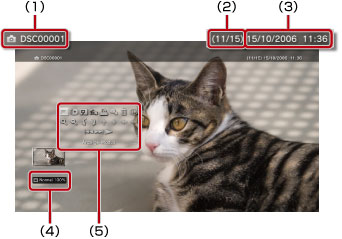

Foto > Verwenden des Bedienfelds
Verwenden des Bedienfelds
Über die Kontrollmenüs auf dem Bildschirm können Sie verschiedene Funktionen ausführen. Die Kontrollmenüs können Sie mit der  -Taste ein- oder ausblenden.
-Taste ein- oder ausblenden.
Anzeige-Modus

Sie können die Bildgröße auf dem Bildschirm ändern.
| Normal | Anzeigen des Bildes ohne Änderung der Bildproportionen, so dass es auf den Bildschirm passt. |
|---|---|
| Zoomen | Anzeigen des Bildes ohne Änderung der Bildproportionen, so dass es den Bildschirm füllt, wobei Bildteile oben und unten oder links und rechts abgeschnitten werden. |
Anmerkung
Je nach Bilddatei ist es unter Umständen nicht möglich, den Anzeige-Modus zu wechseln.
Effekt ändern
Sie können die Methode zum Wechseln von Bildern ändern.
| Normal | Ersetzen des gerade angezeigten Bildes durch das nächste Bild. |
|---|---|
| Dia | Ersetzen des gerade angezeigten Bildes durch das nächste Bild in einem Slideshow-Format. |
| Ausblenden | Aktivieren des Blendeneffekts beim Wechseln zum nächsten Bild. |
Trimmen
Löschen Sie nicht benötigte Teile oben, unten, links oder rechts in einem Bild. Verwenden Sie die linken und rechten Sticks des Wireless-Controllers, um den Bereich zu wählen, den Sie behalten wollen. Mit dem linken Stick können Sie in eine beliebige Richtung navigieren, mit dem rechten Stick können Sie heran- oder wegzoomen. Bearbeitete Bilder werden unter verschiedenen Dateibezeichnungen gespeichert.
Anmerkung
Nur Bilder, die im Systemspeicher des PS3™-Systems gespeichert sind, können bearbeitet werden.
Zur Wiedergabeliste hinzufügen
Fügen Sie ein Bild zu einer Wiedergabeliste hinzu.
Anmerkung
Nur Bilder, die im Systemspeicher gespeichert wurden, können zur Wiedergabeliste hinzugefügt werden.
Drucken
Zum Ausdrucken von Bildern über einen Drucker.
Anmerkung
Zum Drucken müssen Sie zuerst den Drucker über [Druckerauswahl] unter  (Einstellungen) >
(Einstellungen) >  (Drucker-Einstellungen) konfigurieren.
(Drucker-Einstellungen) konfigurieren.
Als Hintergrundbild einstellen
Festlegen des auf dem Bildschirm angezeigten Bildes als Hintergrundbild. Das Bild wird genau so festgelegt, wie es auf dem Bildschirm angezeigt wird, ganz gleich, ob es vergrößert, verkleinert oder gedreht wurde.
Anmerkungen
- Wenn kein Hintergrundbild verwendet wird, nehmen Sie die Einstellung unter (Einstellungen) >
 (Design-Einstellungen) > [Hintergrund] vor.
(Design-Einstellungen) > [Hintergrund] vor. - Es kann immer nur ein Bild als Hintergrundbild festgelegt werden. Wenn ein anderes Bild ausgewählt wird, wird das aktuelle Bild überschrieben.
Löschen
Sie können Bilder löschen.
Anmerkung
Nur Bilder, die im Systemspeicher gespeichert wurden, können gelöscht werden.
Anzeigen
Anzeigen von Informationen zu einem Bild. Mit jedem Tastendruck auf die  -Taste wird zwischen einem Bildschirm mit Exif-Informationen, einem Bildschirm mit einer Informationsleiste und einem Bildschirm ohne weitere Informationen gewechselt.
-Taste wird zwischen einem Bildschirm mit Exif-Informationen, einem Bildschirm mit einer Informationsleiste und einem Bildschirm ohne weitere Informationen gewechselt.
Ein Bildschirm mit Informationsleiste

(1) |
Bildname |
|---|---|
(2) |
Bildnummer/Gesamtzahl der Bilder |
(3) |
Aufnahmedatum und -uhrzeit |
(4) |
Status-Icon |
(5) |
Kontrollmenüs |
Heranzoomen / Wegzoomen

Heran- oder Wegzoomen zum Vergrößern oder Verkleinern eines Bildes. Navigieren Sie mit dem linken Stick des Wireless-Controllers in jede beliebige Richtung und verwenden Sie den rechten Stick zum Heran- oder Wegzoomen.
Nach links drehen/Nach rechts drehen
Das Bild wird um 90 Grad nach links oder rechts gedreht.
Nach oben/Nach unten/Links/Rechts
Das Bild wird so verschoben, dass verdeckte Bereiche, beispielsweise wenn (Anzeige-Modus) auf [Zoomen] gesetzt ist, angezeigt werden.
Zurück/Weiter
Das vorherige bzw. nächste Bild wird angezeigt.
Slideshow
Die Bilder werden automatisch der Reihe nach angezeigt.